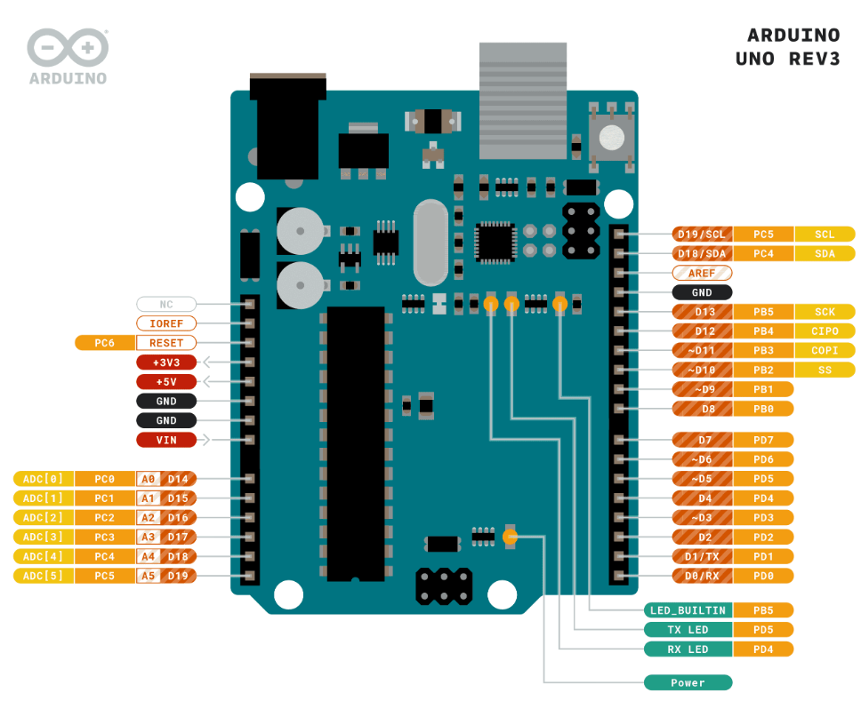
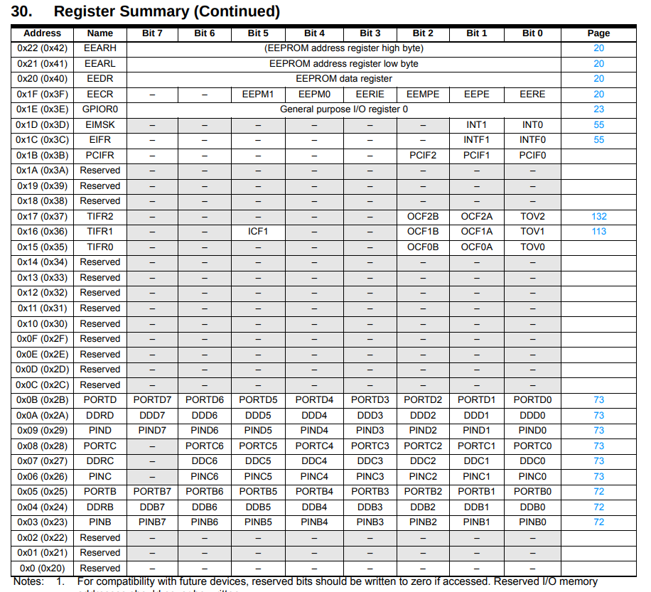

AVR
GPIO Nedir?
GPIO (General Purpose Input/Output): Mikrodenetleyicinin dijital giriş/çıkış pinlerini kontrol etmenizi sağlar. Bir pin’i INPUT (okuma) veya OUTPUT (yazma) modu olarak yapılandırabilirsiniz.
Data Direction Register (DDRx)
 - DDRx register’ı, ilgili port pinlerinin giriş (0) mi yoksa çıkış (1) mi olduğunu belirler. - Örneğin AVR’de DDRB, DDRC, DDRD portları vardır.
// PORTD’in 0. pini OUTPUT (çıkış) olarak ayarlanıyor:
DDRD = 0b00000001; // aynı: DDRD = 0x01;
// Tüm pinleri OUTPUT yapmak için:
DDRD = 0xFF; // 0b11111111
| HIGH NIBBLE | LOW NIBBLE |
|---|---|
| UPPER NIBBER | LOWER NIBBLE |
| 0 0 0 0 | 0 0 0 0 |
| MSB (Most Significant Bit) | LSB (Least Significant Bit) |
Port Output Register (PORTx)
PORTxregister’ı, çıkış modundaki pinlere HIGH (1) veya LOW (0) çıkış seviyesini atar.Binaryveyahexile yazabilirsiniz:
DDRD = 0x01; // D0 pinini OUTPUT yap
PORTD = 0x01; // D0 pinini HIGH (5V)
// Tüm pinleri HIGH yapmak:
PORTD = 0xFF; // 0b11111111
// Tüm pinleri LOW yapmak:
PORTD = 0x00; // 0b00000000
Bit Düzeyi İşlemler
| Operatör | Açıklama |
|---|---|
& |
Bitwise AND (VE) |
| |
|
^ |
Bitwise XOR (ÖZEL VEYA) |
~ |
Bitwise NOT (Tümüleyen) |
<< |
Bitleri sola kaydırma (shift left) |
>> |
Bitleri sağa kaydırma (shift right) |
- Nibble: 4 bit → 0000–1111 (hex’de 0–F)
- MSB (Most Significant Bit) en soldaki; LSB (Least Significant Bit) en sağdaki bittir.
Tek Bir Pini Kontrol Etmek
- En temiz yöntem, bit kaydırma (1 << bit_no) ve mantıksal operatörler kullanmaktır:
|=ve&=kullanımı, diğer pin değerlerini koruyarak yalnızca istediğiniz biti değiştirir.
Not
int gibi bilgisayarın sistemine göre değişen boyutların kullanımı bazı durumlarda değişik alanlar kapladığından sorun yartabilir bu yüzden her sistemde aynı bellek alanı genişliği tutan birimlerin kullanımı daha güvenlidir. uint8_t ,uint16_t ….
uint8_tgibi sabit genişlikte tipler kullanmak, platform bağımsızlığı sağlar.- DDRD ve PORTD bellek adresleri üzerinden doğrudan erişilen I/O register’larıdır. olarak DDRD bellek alanı
0x2Abu kısıma erişip bu kısımda değişiklikler yapıp pinlerin durumları belirlenebilir.

//Bu kısmın anlamı 0x2A bir adrestir ve bu adresin içinde bulunan verinin adı myDDRD dir.
#define myDDRD *((uint8_t*)0x2A)
PINx – Giriş Okuma Register’ı
- PINx register’ı, o porta bağlı pinlerin giriş (INPUT) durumunda okunan dijital seviyesini (HIGH/LOW) yansıtır.
- AVR’de:
PINB,PINC,PINDgibi isimlerle kullanılır. - Pull‑Up ve Pull‑Down:
- Arduino kartlarında dahili pull‑up dirençleri vardır; bu sayede unconnected (yüzer) pinler HIGH seviyede sabitlenir.
- Eğer dahili pull‑up’u devre dışı bırakmak isterseniz, MCUCR’daki PUD bitini 1 yapabilirsiniz:
MCUCR |= (1 << PUD); // Pull‑Up Disable
| Giriş seviyesini okumak | |
|---|---|
| Debouncing (Titreşim Giderme) | |
|---|---|
ISR – Kesme Servis Rutinleri
- SREG içindeki I biti (
sei()) set edilirse ve bir kesme kaynağı tetiklenirse, ilgili ISR() fonksiyonu çalışır. - Kesmenin işlenebilmesi için:
- Global interrupt (sei()) açık olmalı.
- İlgili Mask Register’da (ör. EIMSK) o kesme kaynağı izinli olmalı.
| Register | İşlevi |
|---|---|
| EIMSK | External Interrupt Mask Register |
| EICRA | External Interrupt Control Register A |
| EIFR | External Interrupt Flag Register |
| MCUCR | MCU Control Register (örn. PUD bit’i) |
| SREG | Status Register (I biti = global interrupt) |
Pin Change Interrupt (PCINT)
- PCICR register’ı ile belirli portlardaki pin değişim kesmelerini etkinleştirirsiniz.
- PCMSKx (Pin Change Mask) ile hangi pinlerin izleceğini seçersiniz.
Timer/Counter:
- AVR mikrodenetleyicilerde üç temel timer vardır:
| Timer | Bit Genişliği | Maks Sayaç Değeri |
|---|---|---|
| Timer0 | 8 bit | 255 |
| Timer1 | 16 bit | 65535 |
| Timer2 | 8 bit | 255 |
-
CPU Frekansı ve Zaman Adımı:
- Arduino Uno’da
F_CPU = 16 MHz → 1 döngü = 1 / 16 000 000 s ≈ 0.0625 μs - Timer sayaç adımı = Prescaler’a bağlı olarak CPU döngü süresinin katları olur.
- Arduino Uno’da
-
Basit Delay Hesabı:
- CTC (Clear Timer on Compare) modunda, belirli bir gecikme için “compare match” değeri hesaplanır
OCRn = (DesiredDelay_s / TickTime_s) - 1 - TickTime_s = Prescaler × (1 / F_CPU)
- Örnek: 10 ms gecikme, prescaler = 64:
- CTC (Clear Timer on Compare) modunda, belirli bir gecikme için “compare match” değeri hesaplanır